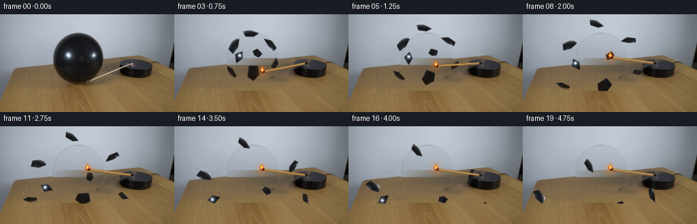
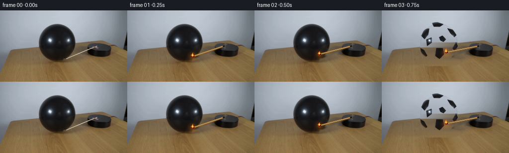

CODING AGENTS AS PIXEL WORLD MODELS
traex/GPT-5.6-Sol · 0112
点击播放 · 原生 RGB 像素
逐轮保存的候选
回放视频、检查图与代码变化。
每份候选均可单独播放。实际图片检查记录在下方工具轨迹中。
候选 01播放与检查图
点击播放 · 原生 RGB 像素


展开代码变化
--- 上一保存版本
+++ 本次保存版本
@@ -0,0 +1,241 @@
+from pathlib import Path
+import math
+import cv2
+import numpy as np
+from PIL import Image
+import artifact_io
+
+HERE = Path(__file__).resolve().parent
+SRC = np.asarray(Image.open(HERE / "first_frame.png").convert("RGB"), dtype=np.uint8)
+H, W = SRC.shape[:2]
+
+
+def remove_original_match(image):
+ """Remove the photographed match so a rigid, moving copy can be rendered."""
+ bgr = cv2.cvtColor(image, cv2.COLOR_RGB2BGR)
+ m = np.zeros((H, W), np.uint8)
+ cv2.line(m, (130, 99), (198, 70), 255, 5, cv2.LINE_AA)
+ cv2.circle(m, (131, 97), 4, 255, -1, cv2.LINE_AA)
+ # A small amount of the original warm halo lies around the head.
+ cv2.ellipse(m, (130, 94), (4, 6), 0, 0, 360, 255, -1, cv2.LINE_AA)
+ repaired = cv2.inpaint(bgr, m, 3, cv2.INPAINT_TELEA)
+ return cv2.cvtColor(repaired, cv2.COLOR_BGR2RGB)
+
+
+STATIC = remove_original_match(SRC)
+
+
+def balloon_silhouette():
+ gray = cv2.cvtColor(SRC, cv2.COLOR_RGB2GRAY)
+ binary = (gray < 72).astype(np.uint8)
+ n, labels, stats, _ = cv2.connectedComponentsWithStats(binary, 8)
+ # The large component in the center-left is the black balloon.
+ candidates = [i for i in range(1, n) if 72 <= stats[i, 0] <= 90 and stats[i, 4] > 2500]
+ idx = max(candidates, key=lambda i: stats[i, 4])
+ comp = labels == idx
+ filled = np.zeros_like(binary)
+ for y in range(H):
+ xs = np.flatnonzero(comp[y])
+ if len(xs):
+ filled[y, xs.min():xs.max()+1] = 255
+ filled = cv2.dilate(filled, np.ones((5, 5), np.uint8), iterations=1)
+ return filled
+
+
+BALLOON = balloon_silhouette()
+
+
+def make_hidden_background():
+ """Estimate the wall/table that was occluded by the balloon.
+
+ Values come only from clean horizontal neighborhoods in the supplied frame;
+ fine residual texture from the left side keeps the fill photographic rather
+ than looking like a flat painted ellipse.
+ """
+ out = STATIC.astype(np.float32).copy()
+ yy, xx = np.mgrid[0:H, 0:W]
+ # Include the soft contact shadow, which disappears with the balloon.
+ shadow = ((((xx - 113) / 51.0) ** 2 + ((yy - 103) / 10.0) ** 2) < 1).astype(np.uint8) * 255
+ replacement_mask = cv2.max(BALLOON, shadow)
+
+ rng = np.random.default_rng(112)
+ for y in range(24, 115):
+ # robust clean colors immediately outside the occlusion
+ left = np.median(STATIC[y, 57:75].astype(np.float32), axis=0)
+ right = np.median(STATIC[y, 156:173].astype(np.float32), axis=0)
+ # On the wall, use a broad gradient; on wood, retain stronger grain.
+ for x in range(72, 159):
+ if replacement_mask[y, x] == 0:
+ continue
+ u = np.clip((x - 74) / 83.0, 0.0, 1.0)
+ smooth = left * (1.0 - u) + right * u
+ # borrow same-row texture from clean wood/wall, color-normalized
+ sx = 8 + ((x - 72) % 59)
+ donor = STATIC[y, sx].astype(np.float32)
+ local = np.median(STATIC[y, max(0, sx-5):min(W, sx+6)].astype(np.float32), axis=0)
+ strength = 0.26 if y < 64 else 0.52
+ val = smooth + strength * (donor - local)
+ out[y, x] = val
+ # Two low-frequency passes eliminate seams without destroying wood texture.
+ fill = np.clip(out, 0, 255).astype(np.uint8)
+ edge = cv2.GaussianBlur(replacement_mask, (0, 0), 1.15).astype(np.float32) / 255.0
+ # Keep replacement confined to the actual object and its cast shadow.
+ result = STATIC.astype(np.float32) * (1 - edge[..., None]) + fill.astype(np.float32) * edge[..., None]
+ return np.clip(result, 0, 255).astype(np.uint8)
+
+
+EMPTY = make_hidden_background()
+
+
+def alpha_over(base, layer, alpha):
+ a = np.clip(alpha.astype(np.float32), 0, 1)[..., None]
+ return np.clip(base.astype(np.float32) * (1-a) + layer.astype(np.float32) * a, 0, 255).astype(np.uint8)
+
+
+def draw_match(frame, angle_deg, frame_index, contact=False):
+ """Draw an antialiased lit match rotating about its pin on the platform."""
+ S = 4
+ canvas = np.zeros((H*S, W*S, 4), np.uint8)
+ pivot = np.array([194.0, 72.0])
+ length = 66.0
+ a = math.radians(angle_deg)
+ tip = pivot + length * np.array([math.cos(a), math.sin(a)])
+ p0 = tuple(np.round(pivot*S).astype(int))
+ p1 = tuple(np.round(tip*S).astype(int))
+
+ # very soft amber illumination around the burning head
+ glow = np.zeros((H*S, W*S), np.uint8)
+ cv2.circle(glow, p1, int((8.0 + 0.5*math.sin(frame_index*2.1))*S), 62, -1, cv2.LINE_AA)
+ glow = cv2.GaussianBlur(glow, (0, 0), 3.2*S)
+ warm = np.zeros_like(canvas)
+ warm[..., :3] = (255, 128, 24)
+ warm[..., 3] = glow
+ canvas = cv2.add(canvas, warm)
+
+ # Wooden shaft: dark lower edge, ochre body, and a fine specular ridge.
+ cv2.line(canvas, p0, p1, (68, 48, 27, 235), 3*S, cv2.LINE_AA)
+ cv2.line(canvas, p0, p1, (172, 130, 71, 255), 2*S, cv2.LINE_AA)
+ off = np.array([-math.sin(a), math.cos(a)]) * 0.45*S
+ q0 = tuple(np.round(np.array(p0)+off).astype(int))
+ q1 = tuple(np.round(np.array(p1)+off).astype(int))
+ cv2.line(canvas, q0, q1, (224, 185, 112, 210), max(1, S//2), cv2.LINE_AA)
+
+ # Charred match head, aligned with the shaft.
+ head_center = tip - 0.8*np.array([math.cos(a), math.sin(a)])
+ axes = (int(3.1*S), int(2.2*S))
+ cv2.ellipse(canvas, tuple(np.round(head_center*S).astype(int)), axes, angle_deg,
+ 0, 360, (49, 22, 16, 255), -1, cv2.LINE_AA)
+ cv2.circle(canvas, tuple(np.round(tip*S).astype(int)), int(1.25*S), (190, 53, 16, 255), -1, cv2.LINE_AA)
+
+ # A small turbulent flame rises vertically even while the stick rotates.
+ flick = 0.8*math.sin(frame_index*2.43) + 0.35*math.sin(frame_index*5.1)
+ cx, cy = tip[0], tip[1] - 1.0
+ fh = 7.0 + flick
+ fw = 3.6 + 0.3*math.sin(frame_index*1.7)
+ outer = np.array([
+ [cx, cy+1.2], [cx-fw, cy-1.2], [cx-1.3, cy-fh*0.55],
+ [cx+0.3+0.45*math.sin(frame_index), cy-fh],
+ [cx+1.2, cy-fh*0.47], [cx+fw, cy-1.1]
+ ]) * S
+ cv2.fillPoly(canvas, [np.round(outer).astype(np.int32)], (244, 83, 10, 230), cv2.LINE_AA)
+ inner = np.array([
+ [cx, cy+0.6], [cx-1.55, cy-1.2], [cx-0.25, cy-fh*0.68],
+ [cx+1.5, cy-1.3]
+ ]) * S
+ cv2.fillPoly(canvas, [np.round(inner).astype(np.int32)], (255, 224, 75, 245), cv2.LINE_AA)
+ cv2.circle(canvas, tuple(np.round([cx*S, (cy-0.8)*S]).astype(int)), int(0.8*S),
+ (255, 247, 185, 255), -1, cv2.LINE_AA)
+
+ # Pin holding the rotating match to the black platform.
+ cv2.circle(canvas, p0, int(2.0*S), (18, 18, 17, 255), -1, cv2.LINE_AA)
+ cv2.circle(canvas, (p0[0]-S//2, p0[1]-S//2), max(1, S//2), (104, 103, 93, 230), -1, cv2.LINE_AA)
+
+ small = cv2.resize(canvas, (W, H), interpolation=cv2.INTER_AREA)
+ rgb = small[..., :3]
+ alpha = small[..., 3].astype(np.float32)/255.0
+ # Premultiplication is not used above, so standard source-over is correct.
+ return alpha_over(frame, rgb, alpha)
+
+
+# Pieces cut from the photographed rubber skin. They contract and curl on bursting.
+FRAGMENTS = [
+ ([(99,30),(112,28),(127,32),(119,38),(104,39)], (-0.9,-5.9), -11, 0.82),
+ ([(87,36),(100,34),(99,52),(91,65),(81,57)], (-4.0,-3.2), -22, 0.72),
+ ([(127,34),(141,40),(149,57),(142,62),(133,49)], (3.0,-4.3), 28, 0.70),
+ ([(91,55),(108,52),(105,68),(89,75)], (-3.4,-0.8), 35, 0.64),
+ ([(142,58),(151,70),(146,87),(136,80)], (4.0,-0.7), -38, 0.62),
+ ([(80,67),(91,75),(99,94),(91,99),(81,86)], (-4.8,1.0), 20, 0.63),
+ ([(103,70),(122,67),(129,84),(118,101),(104,94)], (0.7,2.0), -29, 0.67),
+ ([(111,50),(124,48),(132,64),(121,70),(112,62)], (1.3,-2.2), 48, 0.57),
+]
+
+
+def add_fragments(frame, burst_age):
+ result = frame
+ # burst_age is measured in 1/4-second frame intervals after rupture
+ for j, (points, vel, spin, base_scale) in enumerate(FRAGMENTS):
+ pts = np.array(points, np.float32)
+ center = pts.mean(axis=0)
+ age = float(burst_age)
+ vx, vy = vel
+ dx = vx*age
+ dy = vy*age + 0.43*age*age
+ # Rubber rapidly contracts, then retains its curled shape.
+ scale = base_scale * (0.94 + 0.06*math.exp(-age*0.5))
+ angle = spin * age * 0.34
+ M = cv2.getRotationMatrix2D(tuple(center), angle, scale)
+ M[:, 2] += (dx, dy)
+
+ mask = np.zeros((H, W), np.uint8)
+ cv2.fillPoly(mask, [pts.astype(np.int32)], 255, cv2.LINE_AA)
+ mask = cv2.GaussianBlur(mask, (0,0), 0.35)
+ wrgb = cv2.warpAffine(SRC, M, (W,H), flags=cv2.INTER_LINEAR,
+ borderMode=cv2.BORDER_CONSTANT, borderValue=0)
+ wa = cv2.warpAffine(mask, M, (W,H), flags=cv2.INTER_LINEAR,
+ borderMode=cv2.BORDER_CONSTANT, borderValue=0).astype(np.float32)/255.0
+
+ # settle scraps on the visible table instead of letting them fall through it
+ ys, xs = np.where(wa > 0.08)
+ if len(ys) and ys.max() > 113:
+ shift = ys.max()-113
+ N = np.float32([[1,0,0],[0,1,-shift]])
+ wrgb = cv2.warpAffine(wrgb, N, (W,H), flags=cv2.INTER_LINEAR)
+ wa = cv2.warpAffine(wa, N, (W,H), flags=cv2.INTER_LINEAR)
+ result = alpha_over(result, wrgb, wa*0.98)
+ return result
+
+
+def add_contact_scorch(frame, angle_deg, strength):
+ """Tiny warm reflection where the flame first presses into the latex."""
+ pivot = np.array([194.0,72.0]); a=math.radians(angle_deg)
+ tip = pivot + 66*np.array([math.cos(a), math.sin(a)])
+ layer = np.zeros_like(frame); alpha=np.zeros((H,W),np.float32)
+ x,y=np.round(tip).astype(int)
+ cv2.circle(layer,(x,y),3,(241,82,18),-1,cv2.LINE_AA)
+ cv2.circle(alpha,(x,y),4,float(0.32*strength),-1,cv2.LINE_AA)
+ alpha=cv2.GaussianBlur(alpha,(0,0),1.2)
+ return alpha_over(frame,layer,alpha)
+
+
+def generate():
+ frames = [SRC.copy()]
+ start_angle = math.degrees(math.atan2(97.0-72.0, 133.0-194.0))
+ for i in range(1,20):
+ # The balloon ruptures between frames 2 and 3 after the flame makes contact.
+ popped = i >= 3
+ frame = EMPTY.copy() if popped else STATIC.copy()
+ angle = start_angle + min(i, 8)*3.75
+ if i == 2:
+ frame = add_contact_scorch(frame, angle, 1.0)
+ if popped:
+ frame = add_fragments(frame, i-2)
+ frame = draw_match(frame, angle, i, contact=(i==2))
+ frames.append(frame)
+ frames = np.stack(frames).astype(np.uint8)
+ # The contract's strongest continuity requirement.
+ frames[0] = SRC
+ return frames
+
+
+if __name__ == "__main__":
+ artifact_io.save(generate(), HERE)
可观测工具轨迹
实际执行的命令与返回图片。
命令 1exit 0
/bin/bash -lc "cat GENERATION_RULES.md && printf '\\n---PROMPT---\\n' && cat prompt.txt"
命令 2exit 0
/bin/bash -lc "find . -maxdepth 2 -type f -printf '%p\\n' | sort && printf '\\n--- image metadata ---\\n' && python3 - <<'PY'
from PIL import Image
im=Image.open('first_frame.png')
print(im.mode, im.size)
PY"命令 3exit 0
/bin/bash -lc "python3 - <<'PY'
from PIL import Image
import numpy as np
im=np.array(Image.open('first_frame.png'))
h,w,_=im.shape
print('stats',im.reshape(-1,3).min(0),im.reshape(-1,3).max(0),im.reshape(-1,3).mean(0),im.reshape(-1,3).std(0))
# ascii downsample with luminance
lum=im@np.array([.2126,.7152,.0722])
chars=' .,:;irsXA253hMHGS#9B&@'
for y in range(0,h,4):
print(''.join(chars[min(len(chars)-1,int(lum[y:y+4,x:x+4].mean()/256*len(chars)))] for x in range(0,w,4)))
# Most common quantized colors
q=(im//16)*16
u,c=np.unique(q.reshape(-1,3),axis=0,return_counts=True)
for i in np.argsort(c)[-25:][::-1]:print(tuple(u[i]),c[i])
PY"命令 4exit 0
/bin/bash -lc "python3 - <<'PY'
import cv2, numpy as np
im=cv2.imread('first_frame.png'); gray=cv2.cvtColor(im,cv2.COLOR_BGR2GRAY)
for th in [25,35,45,55,70,90,110]:
m=(gray<th).astype('uint8')*255
n,L,st,cen=cv2.connectedComponentsWithStats(m)
print('\\nth',th)
for i in np.argsort(st[1:,4])[-15:][::-1]+1:
x,y,w,h,a=st[i];
if a>4: print(i,(x,y,w,h,a),np.round(cen[i],1))
PY"命令 5exit 0
/bin/bash -lc "python3 - <<'PY'
from PIL import Image
import numpy as np, colorsys
im=np.array(Image.open('first_frame.png'))
# orange/red/yellow colored pixels candidates
R,G,B=im.transpose(2,0,1)
for name,m in {
'orange':(R>G*1.15)&(R>B*1.5)&(R>80),
'yellow':(R>120)&(G>80)&(R>B*1.5)&(G>B*1.3),
'red':(R>100)&(R>G*1.3)&(R>B*1.4),
'blue':(B>R*1.2)&(B>G*1.05)&(B>80)
}.items():
ys,xs=np.where(m);print(name,len(xs), (xs.min(),ys.min(),xs.max(),ys.max()) if len(xs) else '')
# tile counts 8x8 nonzero
out=[]
for y in range(0,144,8):
for x in range(0,256,8):
c=m[y:y+8,x:x+8].sum()
if c>=2:out.append((int(c),x,y))
print(sorted(out,reverse=True)[:30])
# print HSV/color at candidate platform grid
print('grid mean RGB each 4px region y40:100,x140:256')
chars=' .'
# classify pixels by color: K black, o orange, y yellow, W gray bg, b brown wood, d dark
for y in range(24,108,2):
s=''
for x in range(72,256,2):
a=im[y:y+2,x:x+2].mean((0,1));r,g,b=a
if max(a)<35:c='K'
elif max(a)<65:c='k'
elif r>g*1.25 and r>b*1.5 and r>100:c='O'
elif r>b*1.4 and g>b*1.25 and r>90:c='y'
elif max(a)-min(a)<15 and r>170:c='.'
elif b>r*1.12:c='C'
elif r>g*1.12 and r>b*1.25:c='w'
elif sum(a)>450:c=':'
elif sum(a)>300:c=','
else:c='d'
s+=c
print(f'{y:3}',s)
PY"命令 6exit 0
/bin/bash -lc "python3 - <<'PY'
import cv2, numpy as np
im=cv2.imread('first_frame.png')
g=cv2.cvtColor(im,cv2.COLOR_BGR2GRAY)
for mode in range(3):
e=cv2.Canny(g,20+mode*30,60+mode*60)
lines=cv2.HoughLinesP(e,1,np.pi/180,threshold=10,minLineLength=7,maxLineGap=3)
print('mode',mode)
if lines is not None:
for l in lines[:,0]:
x1,y1,x2,y2=map(int,l)
if 130<x1<256 and 20<y1<110 and 130<x2<256 and 20<y2<110:
print(l.tolist(), 'len',round(np.hypot(x2-x1,y2-y1),1),'angle',round(np.degrees(np.arctan2(y2-y1,x2-x1)),1))
# output run-length of pixels dark per rows and salient high sat per rows in region
rgb=im[:,:,::-1]
mx=rgb.max(2); mn=rgb.min(2)
sat=mx-mn
for y in range(25,105):
vals=[]
for typ,m in [('K',mx[y]<60),('S',(sat[y]>45)&(mx[y]>100))]:
ids=np.where(m)[0]; runs=[]
if len(ids):
st=pr=ids[0]
for z in ids[1:]:
if z>pr+1:
if pr-st>=1:runs.append((st,pr))
st=z
pr=z
if pr-st>=1:runs.append((st,pr))
vals.append(typ+str(runs))
if y%2==0: print(y, *vals)
PY"命令 7exit 0
/bin/bash -lc "python3 - <<'PY'
import cv2,numpy as np
im=cv2.imread('first_frame.png'); rgb=im[:,:,::-1]; g=cv2.cvtColor(im,cv2.COLOR_BGR2GRAY)
for th in [35,45,55,70]:
m=(g<th).astype(np.uint8)
n,L,st,cen=cv2.connectedComponentsWithStats(m)
inds=np.argsort(st[1:,4])[::-1][:4]+1
print('\\n===',th,inds)
for ind in inds[:3]:
print('comp',ind,st[ind].tolist())
for y in range(st[ind,1],st[ind,1]+st[ind,3]):
xs=np.where(L[y]==ind)[0]
if len(xs) and (y%2==0): print(y, int(xs.min()),int(xs.max()),len(xs))
# RGB values strategic
for y in range(58,101,4):
print('\\ny',y)
for x in range(130,241,5):print(x,tuple(rgb[y,x]),end=';')
print()
PY"命令 8exit 0
/bin/bash -lc 'cat artifact_io.py'
命令 9exit 0
/bin/bash -lc "python3 - <<'PY'
from PIL import Image
import numpy as np
im=np.array(Image.open('first_frame.png'))
for y in range(72,104):
s=''
for x in range(125,190):
r,g,b=im[y,x];
if max(r,g,b)<50:c='K'
elif r>180 and g>140 and b<130:c='*' # flame/tan bright
elif r>145 and g>135 and b>110:c='+' # light match
elif r>g*1.25 and r>b*1.5:c='o'
elif r>90 and g>70 and b<90:c='w'
elif max(r,g,b)<90:c='d'
else:c='.'
s+=c
print(f'{y:3} {s}')
PY"命令 10exit 0
/bin/bash -lc "python3 - <<'PY'
from PIL import Image
import numpy as np
im=np.array(Image.open('first_frame.png'))
for y in range(90,104):
for x in range(127,150):
print(f'{x},{y}:{tuple(im[y,x])}',end=' ')
print()
PY"命令 11exit 0
/bin/bash -lc "python3 - <<'PY'
import cv2,numpy as np
from PIL import Image
im=np.array(Image.open('first_frame.png'))
# print candidate light pixels region and components
r,g,b=im.transpose(2,0,1)
m=((r>145)&(g>125)&(b>95)&(np.indices(r.shape)[1]>120)&(np.indices(r.shape)[1]<205)&(np.indices(r.shape)[0]>55)&(np.indices(r.shape)[0]<105)).astype('uint8')
n,L,st,cen=cv2.connectedComponentsWithStats(m,8)
for i in range(1,n):
if st[i,4]>1: print(i,st[i].tolist(),cen[i])
for y in range(55,105):
xs=np.where(m[y])[0]
if len(xs): print(y,[(int(x),tuple(im[y,x])) for x in xs])
PY"命令 12exit 0
/bin/bash -lc "cat > generate.py <<'PY'
from pathlib import Path
import math
import cv2
import numpy as np
from PIL import Image
import artifact_io
HERE = Path(__file__).resolve().parent
SRC = np.asarray(Image.open(HERE / \"first_frame.png\").convert(\"RGB\"), dtype=np.uint8)
H, W = SRC.shape[:2]
def remove_original_match(image):
\"\"\"Remove the photographed match so a rigid, moving copy can be rendered.\"\"\"
bgr = cv2.cvtColor(image, cv2.COLOR_RGB2BGR)
m = np.zeros((H, W), np.uint8)
cv2.line(m, (130, 99), (198, 70), 255, 5, cv2.LINE_AA)
cv2.circle(m, (131, 97), 4, 255, -1, cv2.LINE_AA)
# A small amount of the original warm halo lies around the head.
cv2.ellipse(m, (130, 94), (4, 6), 0, 0, 360, 255, -1, cv2.LINE_AA)
repaired = cv2.inpaint(bgr, m, 3, cv2.INPAINT_TELEA)
return cv2.cvtColor(repaired, cv2.COLOR_BGR2RGB)
STATIC = remove_original_match(SRC)
def balloon_silhouette():
gray = cv2.cvtColor(SRC, cv2.COLOR_RGB2GRAY)
binary = (gray < 72).astype(np.uint8)
n, labels, stats, _ = cv2.connectedComponentsWithStats(binary, 8)
# The large component in the center-left is the black balloon.
candidates = [i for i in range(1, n) if 72 <= stats[i, 0] <= 90 and stats[i, 4] > 2500]
idx = max(candidates, key=lambda i: stats[i, 4])
comp = labels == idx
filled = np.zeros_like(binary)
for y in range(H):
xs = np.flatnonzero(comp[y])
if len(xs):
filled[y, xs.min():xs.max()+1] = 255
filled = cv2.dilate(filled, np.ones((5, 5), np.uint8), iterations=1)
return filled
BALLOON = balloon_silhouette()
def make_hidden_background():
\"\"\"Estimate the wall/table that was occluded by the balloon.
Values come only from clean horizontal neighborhoods in the supplied frame;
fine residual texture from the left side keeps the fill photographic rather
than looking like a flat painted ellipse.
\"\"\"
out = STATIC.astype(np.float32).copy()
yy, xx = np.mgrid[0:H, 0:W]
# Include the soft contact shadow, which disappears with the balloon.
shadow = ((((xx - 113) / 51.0) ** 2 + ((yy - 103) / 10.0) ** 2) < 1).astype(np.uint8) * 255
replacement_mask = cv2.max(BALLOON, shadow)
rng = np.random.default_rng(112)
for y in range(24, 115):
# robust clean colors immediately outside the occlusion
left = np.median(STATIC[y, 57:75].astype(np.float32), axis=0)
right = np.median(STATIC[y, 156:173].astype(np.float32), axis=0)
# On the wall, use a broad gradient; on wood, retain stronger grain.
for x in range(72, 159):
if replacement_mask[y, x] == 0:
continue
u = np.clip((x - 74) / 83.0, 0.0, 1.0)
smooth = left * (1.0 - u) + right * u
# borrow same-row texture from clean wood/wall, color-normalized
sx = 8 + ((x - 72) % 59)
donor = STATIC[y, sx].astype(np.float32)
local = np.median(STATIC[y, max(0, sx-5):min(W, sx+6)].astype(np.float32), axis=0)
strength = 0.26 if y < 64 else 0.52
val = smooth + strength * (donor - local)
out[y, x] = val
# Two low-frequency passes eliminate seams without destroying wood texture.
fill = np.clip(out, 0, 255).astype(np.uint8)
edge = cv2.GaussianBlur(replacement_mask, (0, 0), 1.15).astype(np.float32) / 255.0
# Keep replacement confined to the actual object and its cast shadow.
result = STATIC.astype(np.float32) * (1 - edge[..., None]) + fill.astype(np.float32) * edge[..., None]
return np.clip(result, 0, 255).astype(np.uint8)
EMPTY = make_hidden_background()
def alpha_over(base, layer, alpha):
a = np.clip(alpha.astype(np.float32), 0, 1)[..., None]
return np.clip(base.astype(np.float32) * (1-a) + layer.astype(np.float32) * a, 0, 255).astype(np.uint8)
def draw_match(frame, angle_deg, frame_index, contact=False):
\"\"\"Draw an antialiased lit match rotating about its pin on the platform.\"\"\"
S = 4
canvas = np.zeros((H*S, W*S, 4), np.uint8)
pivot = np.array([194.0, 72.0])
length = 66.0
a = math.radians(angle_deg)
tip = pivot + length * np.array([math.cos(a), math.sin(a)])
p0 = tuple(np.round(pivot*S).astype(int))
p1 = tuple(np.round(tip*S).astype(int))
# very soft amber illumination around the burning head
glow = np.zeros((H*S, W*S), np.uint8)
cv2.circle(glow, p1, int((8.0 + 0.5*math.sin(frame_index*2.1))*S), 62, -1, cv2.LINE_AA)
glow = cv2.GaussianBlur(glow, (0, 0), 3.2*S)
warm = np.zeros_like(canvas)
warm[..., :3] = (255, 128, 24)
warm[..., 3] = glow
canvas = cv2.add(canvas, warm)
# Wooden shaft: dark lower edge, ochre body, and a fine specular ridge.
cv2.line(canvas, p0, p1, (68, 48, 27, 235), 3*S, cv2.LINE_AA)
cv2.line(canvas, p0, p1, (172, 130, 71, 255), 2*S, cv2.LINE_AA)
off = np.array([-math.sin(a), math.cos(a)]) * 0.45*S
q0 = tuple(np.round(np.array(p0)+off).astype(int))
q1 = tuple(np.round(np.array(p1)+off).astype(int))
cv2.line(canvas, q0, q1, (224, 185, 112, 210), max(1, S//2), cv2.LINE_AA)
# Charred match head, aligned with the shaft.
head_center = tip - 0.8*np.array([math.cos(a), math.sin(a)])
axes = (int(3.1*S), int(2.2*S))
cv2.ellipse(canvas, tuple(np.round(head_center*S).astype(int)), axes, angle_deg,
0, 360, (49, 22, 16, 255), -1, cv2.LINE_AA)
cv2.circle(canvas, tuple(np.round(tip*S).astype(int)), int(1.25*S), (190, 53, 16, 255), -1, cv2.LINE_AA)
# A small turbulent flame rises vertically even while the stick rotates.
flick = 0.8*math.sin(frame_index*2.43) + 0.35*math.sin(frame_index*5.1)
cx, cy = tip[0], tip[1] - 1.0
fh = 7.0 + flick
fw = 3.6 + 0.3*math.sin(frame_index*1.7)
outer = np.array([
[cx, cy+1.2], [cx-fw, cy-1.2], [cx-1.3, cy-fh*0.55],
[cx+0.3+0.45*math.sin(frame_index), cy-fh],
[cx+1.2, cy-fh*0.47], [cx+fw, cy-1.1]
]) * S
cv2.fillPoly(canvas, [np.round(outer).astype(np.int32)], (244, 83, 10, 230), cv2.LINE_AA)
inner = np.array([
[cx, cy+0.6], [cx-1.55, cy-1.2], [cx-0.25, cy-fh*0.68],
[cx+1.5, cy-1.3]
]) * S
cv2.fillPoly(canvas, [np.round(inner).astype(np.int32)], (255, 224, 75, 245), cv2.LINE_AA)
cv2.circle(canvas, tuple(np.round([cx*S, (cy-0.8)*S]).astype(int)), int(0.8*S),
(255, 247, 185, 255), -1, cv2.LINE_AA)
# Pin holding the rotating match to the black platform.
cv2.circle(canvas, p0, int(2.0*S), (18, 18, 17, 255), -1, cv2.LINE_AA)
cv2.circle(canvas, (p0[0]-S//2, p0[1]-S//2), max(1, S//2), (104, 103, 93, 230), -1, cv2.LINE_AA)
small = cv2.resize(canvas, (W, H), interpolation=cv2.INTER_AREA)
rgb = small[..., :3]
alpha = small[..., 3].astype(np.float32)/255.0
# Premultiplication is not used above, so standard source-over is correct.
return alpha_over(frame, rgb, alpha)
# Pieces cut from the photographed rubber skin. They contract and curl on bursting.
FRAGMENTS = [
([(99,30),(112,28),(127,32),(119,38),(104,39)], (-0.9,-5.9), -11, 0.82),
([(87,36),(100,34),(99,52),(91,65),(81,57)], (-4.0,-3.2), -22, 0.72),
([(127,34),(141,40),(149,57),(142,62),(133,49)], (3.0,-4.3), 28, 0.70),
([(91,55),(108,52),(105,68),(89,75)], (-3.4,-0.8), 35, 0.64),
([(142,58),(151,70),(146,87),(136,80)], (4.0,-0.7), -38, 0.62),
([(80,67),(91,75),(99,94),(91,99),(81,86)], (-4.8,1.0), 20, 0.63),
([(103,70),(122,67),(129,84),(118,101),(104,94)], (0.7,2.0), -29, 0.67),
([(111,50),(124,48),(132,64),(121,70),(112,62)], (1.3,-2.2), 48, 0.57),
]
def add_fragments(frame, burst_age):
result = frame
# burst_age is measured in 1/4-second frame intervals after rupture
for j, (points, vel, spin, base_scale) in enumerate(FRAGMENTS):
pts = np.array(points, np.float32)
center = pts.mean(axis=0)
age = float(burst_age)
vx, vy = vel
dx = vx*age
dy = vy*age + 0.43*age*age
# Rubber rapidly contracts, then retains its curled shape.
scale = base_scale * (0.94 + 0.06*math.exp(-age*0.5))
angle = spin * age * 0.34
M = cv2.getRotationMatrix2D(tuple(center), angle, scale)
M[:, 2] += (dx, dy)
mask = np.zeros((H, W), np.uint8)
cv2.fillPoly(mask, [pts.astype(np.int32)], 255, cv2.LINE_AA)
mask = cv2.GaussianBlur(mask, (0,0), 0.35)
wrgb = cv2.warpAffine(SRC, M, (W,H), flags=cv2.INTER_LINEAR,
borderMode=cv2.BORDER_CONSTANT, borderValue=0)
wa = cv2.warpAffine(mask, M, (W,H), flags=cv2.INTER_LINEAR,
borderMode=cv2.BORDER_CONSTANT, borderValue=0).astype(np.float32)/255.0
# settle scraps on the visible table instead of letting them fall through it
ys, xs = np.where(wa > 0.08)
if len(ys) and ys.max() > 113:
shift = ys.max()-113
N = np.float32([[1,0,0],[0,1,-shift]])
wrgb = cv2.warpAffine(wrgb, N, (W,H), flags=cv2.INTER_LINEAR)
wa = cv2.warpAffine(wa, N, (W,H), flags=cv2.INTER_LINEAR)
result = alpha_over(result, wrgb, wa*0.98)
return result
def add_contact_scorch(frame, angle_deg, strength):
\"\"\"Tiny warm reflection where the flame first presses into the latex.\"\"\"
pivot = np.array([194.0,72.0]); a=math.radians(angle_deg)
tip = pivot + 66*np.array([math.cos(a), math.sin(a)])
layer = np.zeros_like(frame); alpha=np.zeros((H,W),np.float32)
x,y=np.round(tip).astype(int)
cv2.circle(layer,(x,y),3,(241,82,18),-1,cv2.LINE_AA)
cv2.circle(alpha,(x,y),4,float(0.32*strength),-1,cv2.LINE_AA)
alpha=cv2.GaussianBlur(alpha,(0,0),1.2)
return alpha_over(frame,layer,alpha)
def generate():
frames = [SRC.copy()]
start_angle = math.degrees(math.atan2(97.0-72.0, 133.0-194.0))
for i in range(1,20):
# The balloon ruptures between frames 2 and 3 after the flame makes contact.
popped = i >= 3
frame = EMPTY.copy() if popped else STATIC.copy()
angle = start_angle + min(i, 8)*3.75
if i == 2:
frame = add_contact_scorch(frame, angle, 1.0)
if popped:
frame = add_fragments(frame, i-2)
frame = draw_match(frame, angle, i, contact=(i==2))
frames.append(frame)
frames = np.stack(frames).astype(np.uint8)
# The contract's strongest continuity requirement.
frames[0] = SRC
return frames
if __name__ == \"__main__\":
artifact_io.save(generate(), HERE)
PY
python3 generate.py
python3 - <<'PY'
import numpy as np
from PIL import Image
z=np.load('pixels.npz')['pixels']
print(z.shape,z.dtype)
a=np.array(Image.open('first_frame.png')); b=np.array(Image.open('frames/00.png'))
print('frame0 exact',np.array_equal(a,b),'diffs',[np.mean(np.array(Image.open(f'frames/{i:02}.png'))"'!=np.array(Image.open(f'"'frames/{i-1:02}.png'))) for i in range(1,6)])
PY"命令 13exit 0
/bin/bash -lc "python3 - <<'PY'
from PIL import Image
import numpy as np
im=np.array(Image.open('inspection.png').convert('RGB'))
# ascii inspect each selected frame itself from actual dirs focused
chars=' .,:;irsXA253hMHGS#9B&@'
for fi in [0,1,2,3,5,8,13,19]:
a=np.array(Image.open(f'frames/{fi:02}.png'))
lum=a@np.array([.2126,.7152,.0722])
print('\\nFRAME',fi)
for y in range(20,120,4):
print(''.join(chars[min(len(chars)-1,int(lum[y:y+4,x:x+4].mean()/256*len(chars)))] for x in range(56,240,4)))
PY"命令 14exit 0
/bin/bash -lc "python3 -m py_compile generate.py && python3 - <<'PY'
from PIL import Image
import numpy as np, os
ims=[]
for i in range(20):
a=np.array(Image.open(f'frames/{i:02d}.png'))
assert a.shape==(144,256,3) and a.dtype==np.uint8
ims.append(a)
ims=np.stack(ims)
print('frames',ims.shape,ims.dtype)
print('first exact',np.array_equal(ims[0],np.array(Image.open('first_frame.png'))))
print('RGB extrema',ims.min(),ims.max())
print('outputs',[(p,os.path.getsize(p)) for p in ['pixels.npz','index.html','inspection.png','transition_check.png','generate.py']])
PY"保存候选 1 份；完成命令 14 次；可验证图片返回 0 张。原始 API 响应与完整日志保留在本地。